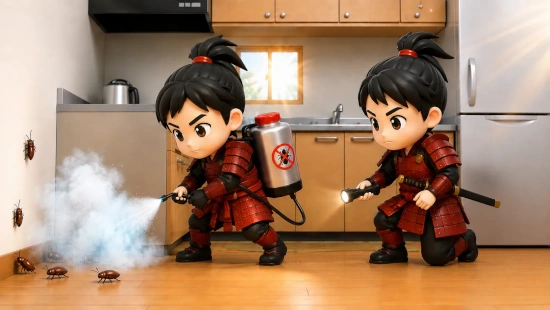
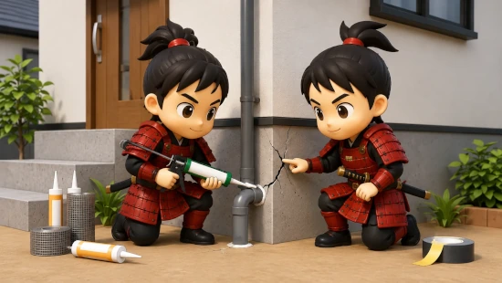
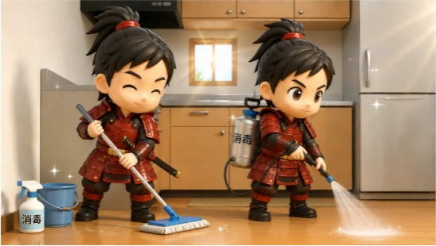

東京都
新宿区、足立区、江戸川区、練馬区、世田谷区、杉並区、大田区、板橋区、葛飾区、江東区、品川区、北区、中野区、豊島区、目黒区、墨田区、文京区、港区、渋谷区、荒川区、台東区、中央区、千代田区、八王子市、町田市、府中市、調布市、西東京市、小平市、三鷹市、日野市、立川市、ほか都内全域



ハエの被害を最短即日で解決するプロの駆除サービスです。東京・神奈川・埼玉・千葉で即日対応・最安価格を目指して施工します。まずは無料見積りから、最短当日作業も可能です。
最も一般的な家庭害虫。8〜10mm程度。生ゴミや腐肉に集まる。
3〜4mm程度。小さく、生ゴミの周りに多く発生。
2〜3mm程度。排水口や風呂場に多く発生。
6〜8mm程度。厨房や食卓周辺で頻繁に見かける。
粘着シート・フライペーパー：ハエが集まりやすい場所（キッチン、ゴミ箱など）に設置。効果的で衛生的。
設置場所：排水口周辺、ゴミ箱近く、窓辺が効果的です。
スプレータイプ：見つけたハエに直接スプレー。素早く効果があります。
燻蒸剤：キッチン全体に使用。事前に準備が必要で定期的な使用が目安。
迅速な処分：生ゴミは毎日処分し、蓋付き容器に保管してください。
冷凍保管：すぐに捨てられない場合は冷凍庫で保管するのが有効です。
以下の場合は、プロへの相談をお勧めします：
侵入経路の特定と対策で、再発を防止
業務用の強力な薬剤と専門知識で確実に駆除
施工後の再発時は無料対応する保証
手間と時間をかけずに解決
プロの対応で心理的な不安を解消
環境に配慮した施工で安全・衛生的
慌てず、以下の対応をしてください：
ハエは以下のルートから侵入します：
はい、ハエは驚くほど繁殖力が強いです：
1匹見かけたら、既に複数の世代が存在している可能性があります。早期対応が重要です。
ハエは温度に非常に敏感です：
特に活発な時期：
通年で対策が必要ですが、春〜秋は特に注意が必要です。
対策の種類により異なります：
当社は現地調査・お見積りが無料です。詳細はお問い合わせください。
はい。ペットの安全を第一に考えて対応します：
詳細は、お問い合わせ時にお知らせください。
首都圏を中心に迅速対応。主要エリアは最速約30分でお伺いできる場合があります（曜日・距離により変動）。
新宿区、足立区、江戸川区、練馬区、世田谷区、杉並区、大田区、板橋区、葛飾区、江東区、品川区、北区、中野区、豊島区、目黒区、墨田区、文京区、港区、渋谷区、荒川区、台東区、中央区、千代田区、八王子市、町田市、府中市、調布市、西東京市、小平市、三鷹市、日野市、立川市、ほか都内全域
横浜市（鶴見区・神奈川区・西区・中区・南区・保土ケ谷区・磯子区・金沢区・港北区・戸塚区・港南区・旭区・緑区・瀬谷区・栄区・泉区・青葉区・都筑区）、川崎市、相模原市、藤沢市、横須賀市、平塚市、茅ヶ崎市、大和市、厚木市、座間市、海老名市、伊勢原市、綾瀬市、ほか県内全域
さいたま市、川口市、川越市、越谷市、所沢市、草加市、春日部市、上尾市、熊谷市、新座市、久喜市、狭山市、入間市、深谷市、三郷市、朝霞市、戸田市、鴻巣市、加須市、富士見市、ふじみ野市、ほか県内全域
千葉市（中央区・花見川区・稲毛区・若葉区・緑区・美浜区）、船橋市、松戸市、市川市、柏市、市原市、八千代市、佐倉市、習志野市、浦安市、流山市、野田市、我孫子市、木更津市、成田市、鎌ケ谷市、ほか県内全域